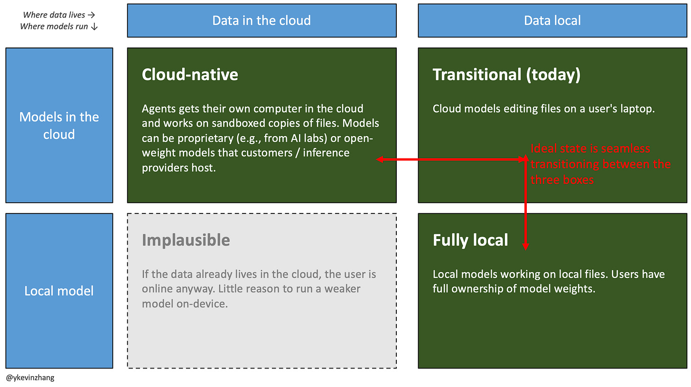

מתחת לחזית: הקרב על AI שהוא ״טוב מספיק״
מה יקרה לכלכלת ה-AI כאשר אינטליגנציה טובה מספיק תבצע את רוב עבודת הידע
בשבועות האחרונים נעשה ברור שסוכני AI לצרכנים הגיעו לנקודת מפנה. Meta השיקה את Muse, סוכן אישי שפועל במכונה וירטואלית משלו ויכול לערוך קניות, לקבוע פגישות ולמלא טפסים בשם המשתמש. במקביל, השווי של הסטארטאפ Instinct צמח בתוך חודשים ספורים ל-10 מיליארד דולר. סוף סוף אנחנו רואים איך נראה AI סוכני מעבר להדגמות טכנולוגיות.
מרתק לצפות בזה, אבל הקרב המשמעותי יותר מתנהל במקום אחר. מאגר ההכנסות שחברות AI יכולות לחלץ מצרכנים מוגבל ביחס להשקעות ההון ב-AI. רוב ה-AI הצרכני רק יחלק מחדש את תקציבי הפרסום הקיימים, לצד הרחבה מסוימת של השוק דרך מנויים והפחתת החיכוך בעסקאות. כדי שתזת ההשקעה ב-AI תחזיק מעמד, הכנסות חדשות של טריליוני דולרים יצטרכו להגיע מהארגונים.
נוף ה-AI הארגוני עדיין מתעצב. כיום מעבדות החזית לוכדות את רוב הערך הכלכלי, בעיקר דרך קוד. ריכוז ההכנסות הזה כנראה לא יתרחב לכל עבודת הידע. ככל שמודלים במשקולות פתוחות יהפכו לטובים מספיק, רוב עבודת הידע היומיומית, במונחי נפח, תוכל לרוץ על מודלים זולים יותר בענן או על המכשיר. מעבדות החזית עדיין יתפסו את רוב ההכנסות מהעבודות התובעניות ביותר, אבל מתחת לחזית יש די מקום לעסקים גדולים מאוד.
- למה משימות תחומות חיוניות לגל הבא של הכנסות AI
- כיצד שינויים קודמים בממשק שינו את חלוקת הערך
- מדוע עבודת הידע הסוכנית של היום אינה מצב הקבע
- מטריצת 2×2: היכן המודל רץ והיכן הנתונים נמצאים
- כיצד ענקיות, מעבדות חזית וסטארטאפים ניגשים לשוק
- המשמעות למשקיעים
למה משימות תחומות הן המפתח לגל הבא של הכנסות AI
המאמר הזה עוסק בעיקר בעבודת ידע עבור ״כל השאר״, כלומר במשימות תחומות. משימות לא תחומות הן משימות שתמיד יכולות להפיק תועלת מעוד אינטליגנציה, למשל מחקר ופיתוח, מסחר או כתיבת קוד. לעומתן, משימות תחומות דורשות רק רמת אינטליגנציה קבועה, ומעבר לה שיפור המודל כבר אינו משפר את הביצועים.
דוגמאות הן חילוץ נתונים מדוחות כספיים, ניסוח תשובות לאימייל או פתרון פניות פשוטות בשירות לקוחות. כיום, מחוץ לקוד, ההכנסות ממשימות לא תחומות מוגבלות, וקשה להעריך מתי הן יניבו הכנסות משמעותיות. מתי, למשל, AI ירפא סרטן? לכן, אם צמיחת ההכנסות מקוד תאט, סוגים אחרים של עבודת ידע חייבים לסגור את הפער. זו הסיבה שהבנת צורת המוצר עבור משימות תחומות חיונית כל כך לתזת ההשקעה ב-AI.
איך עבדנו עם טכנולוגיה לפני AI
כדי להבין כיצד תיראה עבודת ידע בעידן הסוכנים, כדאי לחזור לשני מעברים טכנולוגיים קודמים. כל אחד מהם שינה את זהות החברות שתפסו את הערך.
המעבר הראשון היה משורת הפקודה לממשק גרפי. Microsoft הייתה המנצחת הגדולה, משום שהחזיקה גם ב-Windows וגם ביישומים שבהם בוצעה העבודה: Word, Excel, PowerPoint ו-Outlook.
המעבר השני היה מתוכנה לשחקן יחיד לתוכנה שיתופית שמתחילה בענן. החישוב והקבצים עברו לענן, והמחשב האישי הפך בהדרגה ללקוח דק עבור הדפדפן. Salesforce, Workday, ServiceNow ו-Google הצליחו ״לגנוב״ נתח מהמשימה. מושג הקובץ נעשה פחות חשוב: משתמש CRM אינו מוטרד מהמקום שבו רשומות הלקוחות נשמרות. ובכל זאת, קבצים לא נעלמו. עולם הפיננסים עדיין מתנהל ב-Excel, ורוב הארגונים עדיין מעבירים מצגות ומסמכי Word מאדם לאדם.
עוד לפני סוכני AI, העבודה הארגונית הייתה במצב משונה: עובדי ידע השתמשו ביישומי SaaS, ביישומים מקומיים שיוצרים ועורכים קבצים, ולעיתים קרובות בשניהם. עם הופעת הסוכנים, לא ברור היכן ״העבודה״ תתבצע. היכן יחיו הנתונים? היכן תרוץ ההסקה? ומעל הכול, מי יתפוס את הערך?
עבודת הידע הסוכנית של היום אינה מצב הקבע
השוק עדיין צעיר מאוד מבחינת בשלות המוצר. רמת התחכום של עובד ידע עשויה לנוע משאלות פשוטות ל-ChatGPT, דרך תוספי Excel של ChatGPT או Claude, ועד מעטפות ייעודיות כמו Harvey ו-Legora לעולם המשפט.
אפליקציות הדסקטופ של OpenAI ושל Anthropic הן הצצה מוקדמת, אך לא מושלמת, לעתיד. הן מסוגלות לחקור ולערוך קובצי Excel, Word ו-PowerPoint. הסוכן עובד על קבצים במחשב המשתמש, או מתחבר ליישומי ענן, אבל המודל ש״חושב״ רץ בענן. לתהליך הזה כמה קצוות מחוספסים:
- עריכות מקומיות הרסניות: סוכנים יכולים לדרוס או למחוק קבצים, וקשה לראות מה השתנה או לחזור לאחור. לסוכני קוד יש רשת ביטחון בדמות Git; למסמך Word או למודל Excel מקומי אין מקבילה, אלא אם הם בשירות עם ניהול גרסאות.
- התנהגות לא עקבית ביישומים: סוכנים מאבדים שליטה כשהם מתקשרים עם יישומי צד שלישי, למשל ומוחקים אימיילים בטעות.
- אבטחה: סוכן בעל גישה רחבה לכונן חשוף להזרקת פקודות, שבה הוראות זדוניות במסמך או בדף אינטרנט חוטפות אותו.
- בעיית המכסה הסגור: כשהמשתמש סוגר את המחשב, הסוכן נעצר. גרסת ענן יכולה להמשיך, אך גישה לקבצים מקומיים תלויה בכך שהמחשב יישאר ער ומחובר.
מטריצת 2×2 לעבודת ידע סוכנית
הדרך הפשוטה לחשוב על השוק היא מטריצת 2×2: היכן רץ המודל שמבצע את העבודה, והיכן נמצאים הנתונים שעליהם הוא עובד. ביישומי SaaS הנתונים ממילא נמצאים בענן.

המטריצה המקורית: המצב הרצוי עובר באופן חלק בין שלוש התצורות הסבירות.
רבים מהמוצרים של היום נמצאים במצב המעבר. מעבדות החזית כבר הוסיפו יכולות Cloud-native, אך הן עדיין לא בשלות. לאורך זמן המוצרים צפויים להתכנס לממשק אחיד שיעבור אוטומטית בין שלוש התצורות.
נקודה חשובה נוספת היא ריבונות אינטליגנציה. במשימות מסוימות, כמו ביולוגיה או אימון מודלים, מודלים קנייניים עלולים לסרב לבקשות. לקוחות מתוחכמים יעבירו, ככל שיוכלו, עומסי עבודה למודלים שבבעלותם.
המתחרים תוקפים מזוויות שונות
מעבדות AI בחזית או סמוך אליה, OpenAI, Anthropic ו-SpaceX: לשלושתן ממשקי ״עושים הכול״ שמסוגלים לחקור, לערוך קבצים, לכתוב קוד ולהתחבר ליישומים. Grok Bot של SpaceX, שהתפתח באופן טבעי מ-OpenClaw ומ-Hermes, מקצה מכונה וירטואלית לכל משתמש. Dots של OpenAI הוא הניסיון שלה לבנות סוכנים שפועלים תמיד.
למעבדות יש את המודלים הטובים ביותר, אך גישתן לנתונים מוגבלת. לכן הגיוני שהן מתחברות למקורות חיצוניים כמו Google Drive, GitHub ו-Notion. מחוץ לקוד חוויית המשתמש עדיין אינה עקבית, ולכן הצעד ההגיוני הבא הוא לרכוש גישה לנתונים שמעבר להיסטוריית הצ׳אט.
ענקיות הטכנולוגיה, Google, Microsoft ו-Meta: העבודה מתבצעת כיום בעיקר בתוך Office ו-Google Workspace, בעוד Meta מביאה הפצה צרכנית עצומה. למרות זאת, אף אחת עדיין לא הפכה את עמדתה להכנסות AI חדשות של מאות מיליארדי דולרים מעבודת ידע כללית.
- Microsoft בחרה בתחילה ב-Copilot בתוך יישומי Office. בעקבות הצלחת OpenAI ו-Anthropic היא עוברת לממשק מאוחד והשיקה את אפליקציית Copilot.
- Google שילבה את Gemini עמוק בתוך Workspace. אך המודלים שלה מפגרים כעת אחרי מעבדות החזית, ולא ברור מתי Argon החדש יופץ בהיקף רחב.
- Muse של Meta מיועד כרגע לצרכנים, אך לחברה יש שאיפות B2B. Meta גייסה את מנכ״ל MongoDB, סי. ג׳יי. דסאי, להוביל את הפלטפורמה הארגונית, בתקווה להצליח יותר מאשר עם Kustomer שפוצלה ו-Workplace שנסגרה.
כל השאר:
- Apple ממוצבת היטב כשחקנית AI מקומית. מחשבי Mac מתקדמים יכולים להריץ מודלים קטנים, ורק בקשות קשות יוסלמו לשרתי Private Cloud Compute.
- Perplexity, Genspark ו-Manus מחזיקות ביתדות מוצר ייחודיות. Genspark, למשל, מציבה מוצר דמוי Excel לצד הצ׳אט. הכנסותיהן קטנות בשניים עד שלושה סדרי גודל מהמתחרים הגדולים, ולכן הן במרוץ לזכות בהפצה לפני שהמעבדות והענקיות יחסלו אותן.
- סוכנים לומדים בקוד פתוח כמו OpenClaw ו-Hermes מאפשרים למודלים לרוץ מקומית ובענן, אך קשים יותר להתקנה עבור המשתמש הממוצע.
- מעטפות כמו LM Studio אימצו גישה היברידית המשלבת מודלים מקומיים ומודלים בענן.
מה המשמעות למשקיעים?
למרות העמדות הדומיננטיות של Anthropic ו-OpenAI, עדיין לא ברור איזו פלטפורמה תנצח בעבודת הידע של המיינסטרים. על הכף מונחות הכנסות של מאות מיליארדים, ואולי טריליונים, ממשימות AI תחומות.
- אם האימוץ לעבודת ידע רגילה יהיה איטי מהצפוי, ייווצר פער בהכנסות כאשר הצמיחה מקוד תאט. לא ברור מתי גילוי תרופות, מסחר ורובוטיקה ישלימו את החסר.
- אם העולם כבר מוציא כיום טריליון דולר על AI, ועד 2030 יגיע לכמה טריליונים, הכנסות ההסקה צריכות להגיע לכמה טריליוני דולרים בשנה, והחזר ההשקעה בפועל צריך להיות מכפיל שלהן.
- כדי שתזת ההשקעה תישאר שלמה, עבודת ידע במיינסטרים חייבת לייצר מספיק הכנסות. אחרת, החברות שנהנות מצווארי הבקבוק ייפגעו.
- המעבדות רוצות לתפוס את ההכנסות באמצעות המודלים שלהן, אך ככל שהלקוחות מתוחכמים הן עלולות להיאלץ להפוך לפלטפורמות ניטרליות. השותפות של OpenAI עם Baseten בוחנת גישה כזו, שעשויה להביא לצמיחה איטית ולשוליים דקים יותר.
- בטווח הבינוני, מחשבים אישיים יגיעו עם די כוח וזיכרון כדי שמודלים מקומיים של עשרות מיליארדי פרמטרים יבצעו חלק מהעבודה. חלק מההכנסות יעבור מהענן למכשיר.
- יש מקום לפלטפורמת ״שווייץ״ שתנתב עומסים בין מודלים מקומיים לענן ותעביר עבודה בין מכשירים. Microsoft ממוצבת היטב לכך עם חזון AI היברידי ומחשבי Windows בעלי שבבי RTX Spark של Nvidia. Apple עשויה להרוויח גם היא.
- סטארטאפים כמו LM Studio, OpenCode, Perplexity, Genspark, Manus ו-OpenRouter יכולים להפוך לפלטפורמות ניטרליות לעבודת ידע.
- כיום מודלים מתקשרים עם נתוני צד שלישי באמצעות מחברים. המעבדות ירצו לשלוט בשכבת הנתונים, וייתכן שצוותי הפיתוח התאגידי שלהן כבר שקלו לרכוש את Dropbox או Box כדי לקצר את הדרך.
עבודת הידע של המיינסטרים עדיין פתוחה
חוויית המוצר הנוכחית, שבה מודלים בענן עובדים על קבצים במחשב המשתמש, כנראה אינה מצב הקבע. המעבדות ישמרו את רוב הכנסות ה-AI, במיוחד מעבודה לא תחומה כמו קוד ומדע. אבל רוב עבודת הידע אינה זקוקה לחזית, וזה משנה את צורתה של כלכלת ה-AI.
עבודה שעוברת למודלים זולים יותר בענן נמכרת בשבריר ממחירי החזית. הסקה שרצה על מכשיר המשתמש היא הכנסה שלעולם אינה מגיעה למרכז הנתונים. השחקנים מבינים זאת, ואנחנו רואים תגובות מוקדמות בשותפות OpenAI-Baseten ובאסטרטגיה ההיברידית של Microsoft.